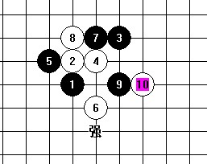

疏星一打 强6 必败谱（只做了 一路而已）
首页
定式及研究
#1 疏星一打 强6 必败谱（只做了 一路而已） 作者：刀魂 发表时间：2009-4-17 9:14:49

 疏星一打除次6和强6一路终结谱（刀魂制作）.rar
疏星一打除次6和强6一路终结谱（刀魂制作）.rar
#2 Re:疏星一打 强6 必败谱（只做了 一路而已） 作者：江南新绿 发表时间：2009-4-17 21:30:10
终结贬值了。
［ 二十七刀 于 2009-4-18 21:45:32 时花50金币砸了你一个臭鸡蛋］
#3 Re:疏星一打 强6 必败谱（只做了 一路而已） 作者：二十七刀 发表时间：2009-4-18 21:46:43
发哥老是跟刀魂过不去；我就算穷困潦倒也要砸死你。
#4 Re:疏星一打 强6 必败谱（只做了 一路而已） 作者：刀魂 发表时间：2009-4-18 22:15:48
 不知道 27刀 大哥 为什么 一直 支持我哦。。。难道你不怕大家对你 有意见啊
不知道 27刀 大哥 为什么 一直 支持我哦。。。难道你不怕大家对你 有意见啊
#5 Re:疏星一打 强6 必败谱（只做了 一路而已） 作者：超级天逸超人 发表时间：2009-4-19 12:43:30
貌似 平衡局~ 但是 .....蛮厉害的
我 要 好好学习嘿嘿~
#6 Re:疏星一打 强6 必败谱（只做了 一路而已） 作者：小豆 发表时间：2009-6-19 14:48:13
砸不砸放一边，先学习学习。
学好了再砸之
#7 Re:疏星一打 强6 必败谱（只做了 一路而已） 作者：wrwak 发表时间：2009-6-19 18:31:13
江南新绿貌似很久不见了哦
#8 Re:疏星一打 强6 必败谱（只做了 一路而已） 作者：茗弈如梦 发表时间：2009-6-19 18:52:03
他们都说七在四的右两格基本胜了,楼主的七手黑白缠得太厉害了
#9 Re:疏星一打 强6 必败谱（只做了 一路而已） 作者：静待花开 发表时间：2009-6-20 11:57:52
汗，这不是逆刃的谱吗?
#10 Re:疏星一打 强6 必败谱（只做了 一路而已） 作者：wrwak 发表时间：2009-6-20 12:39:59
明显是刀魂小制作
#11 Re:疏星一打 强6 必败谱（只做了 一路而已） 作者：慎独 发表时间：2009-6-20 15:43:30
 加了另一个弱弱点就变刀魂的了
加了另一个弱弱点就变刀魂的了 ，不知道实战中有没有人走刀魂那个12的
，不知道实战中有没有人走刀魂那个12的
#12 Re:疏星一打 强6 必败谱（只做了 一路而已） 作者：起航 发表时间：2009-8-17 0:51:31
呵呵，下载回去看看。
#13 Re:疏星一打 强6 必败谱（只做了 一路而已） 作者：夏琦 发表时间：2009-12-4 15:15:47